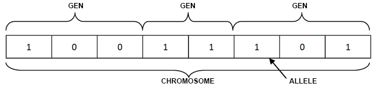
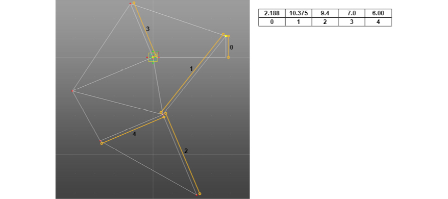
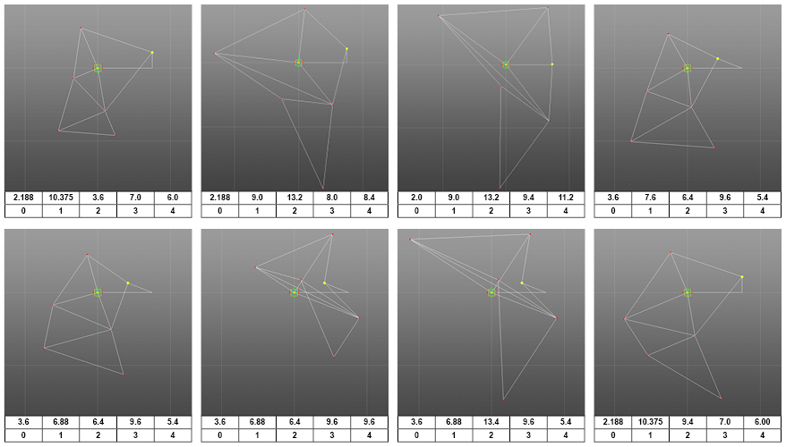

Numerical representation
A chromosome in the genetic algorithm context, is a numerical list that represent a possible solution (individual) to the problem in the space search. The chromosome is composed by a series of values called genes or alleles. These, represents the solution parameters and contain the necessary information to generate the model. The chromosome is usually composed by binary values like [1, 0, 1, 1, 1, 0, 1, 1, 0, 0, 0], but they can have other representations, like real numbers, or characters. The chromosome purpose is facilitate the work for operators (Selection, Crossover, Mutation, etc.). The group of chromosomes is called population. The chromosome is the genetic code analogy in the living creatures.

Example
The task consist in evolve a robotic leg to run faster. The leg is composed by a series of fixed bars and mechanical joints to allow the movement. The problem consist in to find the right length for the different bars to make the movement as efficiently as possible. In the image below is the model of the leg and the parameters to represent the leg.

The chromosome length is 5. Each value in the chromosome represents a bar length and a unique parameter in the design. Any change in this values will modify the parametric model.

The genetic algorithm works creating a bunch of different random leg chromosomes. Some of them will perform slightly better than others, and these chromosomes will be selected for the crossover and the offsprings, after an small mutation will replace the old population. the process will repeat until some condition is met.